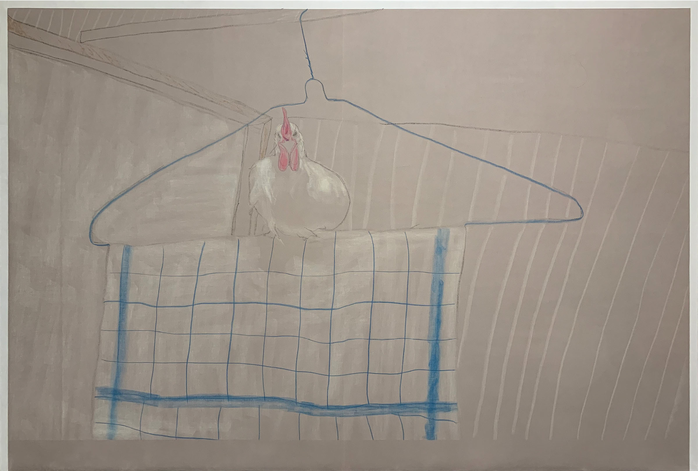
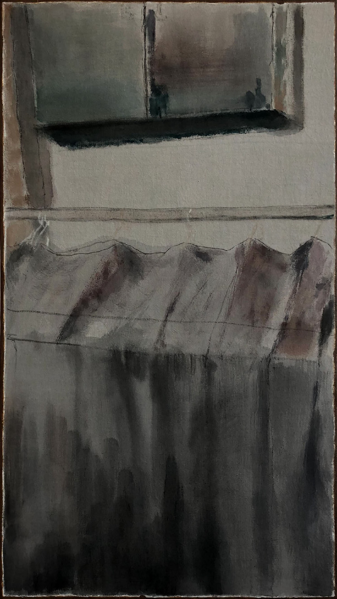
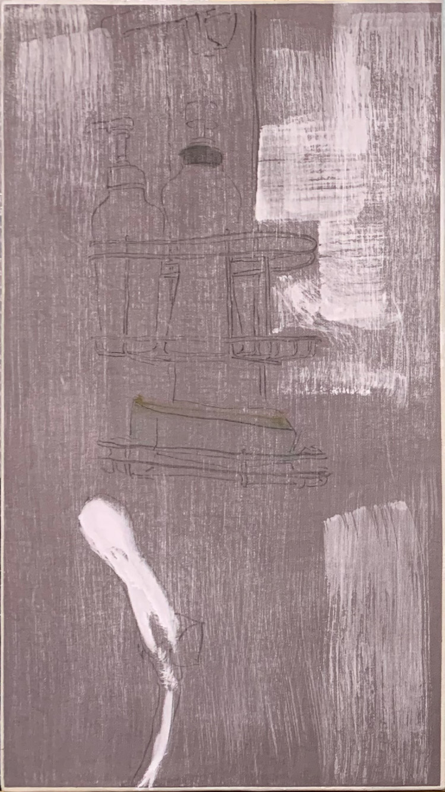
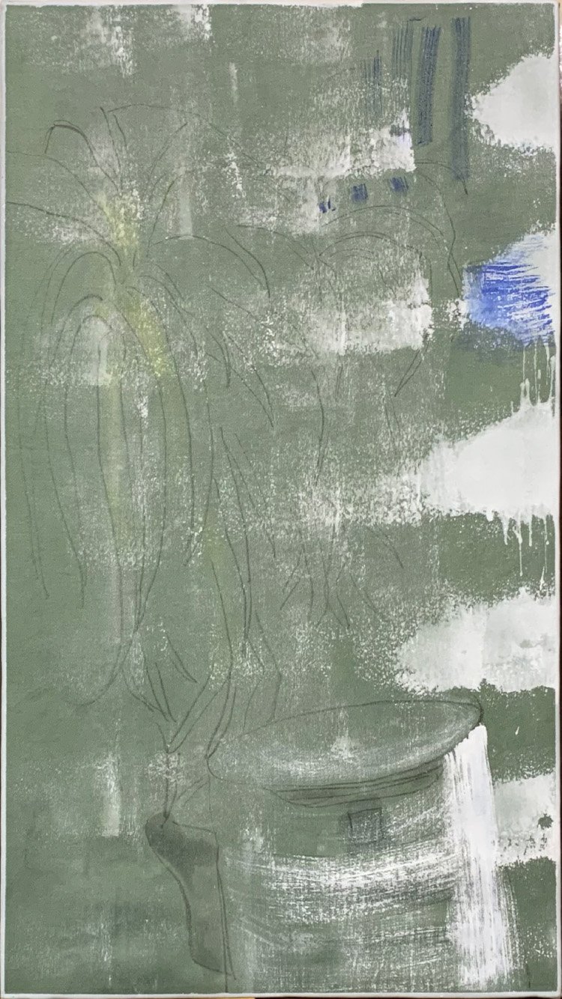
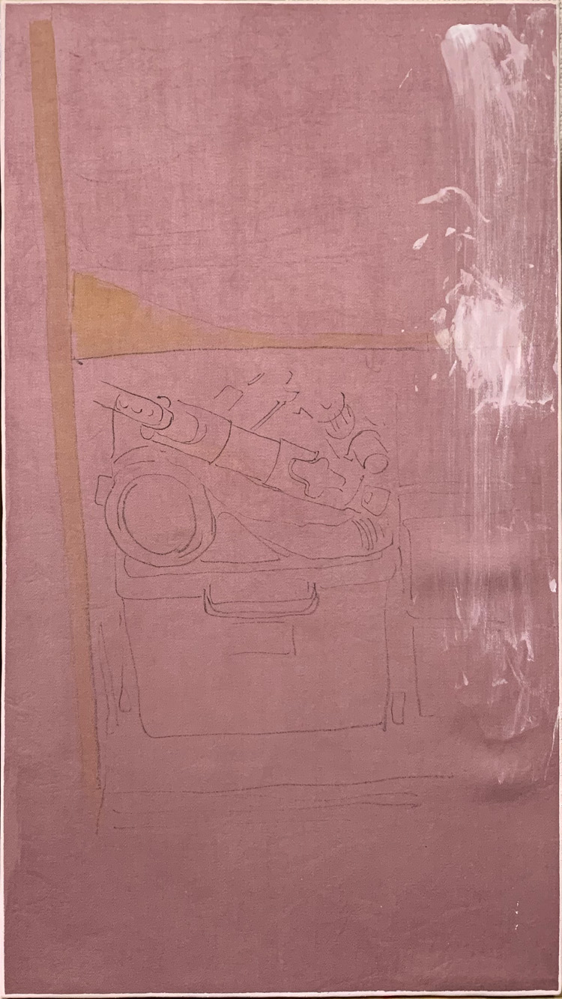
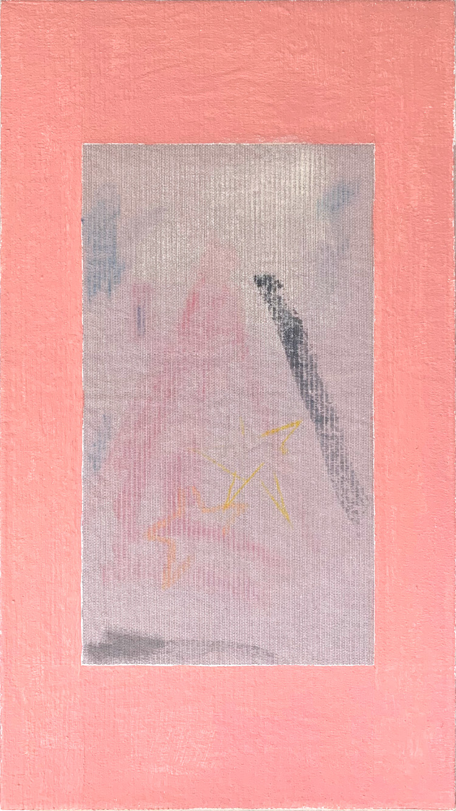
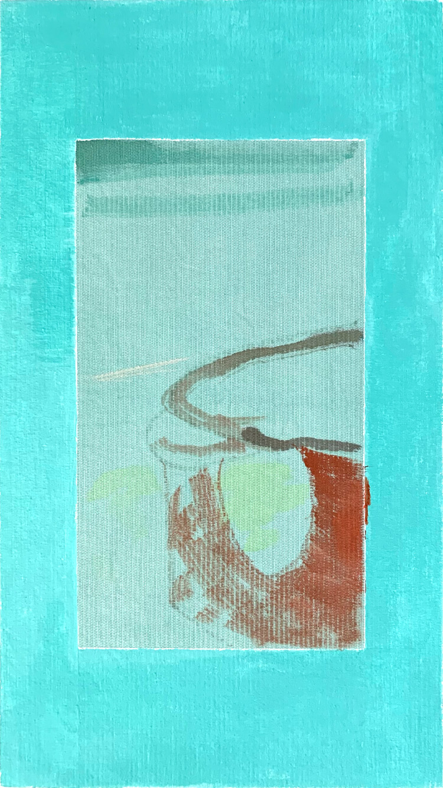
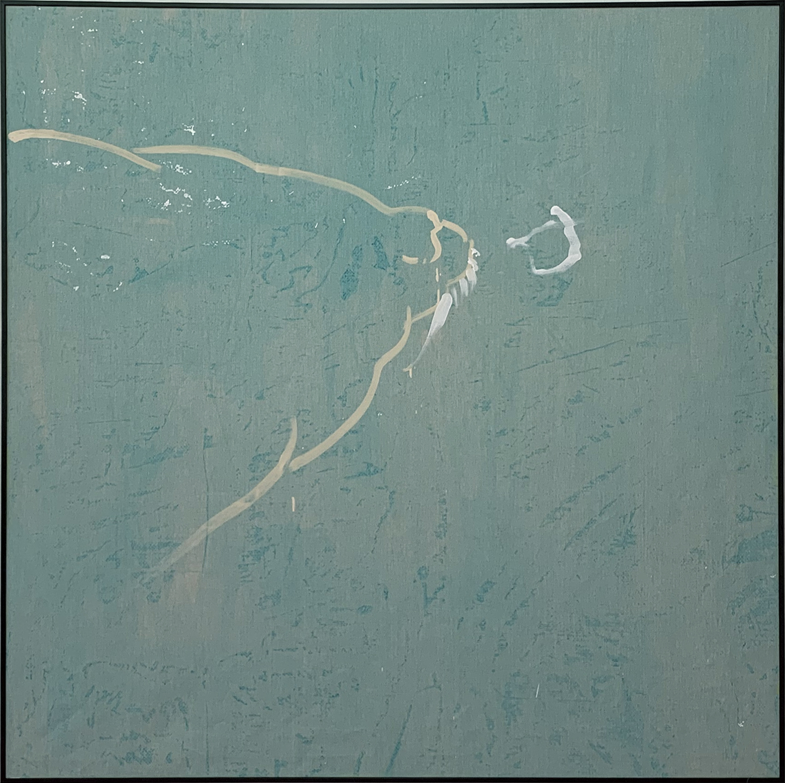

{kind=link}

年賀状だけの関係が終わる。
The End of a Relationship Maintained Only Through New Year's Cards
三角チャコ、墨、膠、繊維用染料、綿布、木製パネル
Tailor's chalk, ink, animal glue, fabric dye, cotton and wooden panel
Paintings / Drawings / Works
絵画を中心に、記憶や知覚の中で変容したモチーフと、色や情報の重要度が立ち上がる瞬間を探求しています。
Through painting and drawing, I explore motifs transformed by memory and perception, and the moments when colours or fragments of information acquire heightened significance.

Upcoming Solo Exhibition
Colours That Keep the World from Ending
2026.10.13 Tue - 10.18 Sun
A4ドローイングを中心とする15〜25点の連作を展示予定です。詳細と在廊予定は会期が近づき次第お知らせします。
The exhibition will present a series of approximately 15-25 A4 drawings. Further details and the artist's attendance schedule will be announced closer to the opening.
Profile / Artist Statement
小林喜一郎（Kiichiro Kobayashi）。1995年神奈川県横浜市生まれ。愛知県岩倉市および名古屋市で育つ。2018年、武蔵野美術大学造形学部油絵学科油絵専攻卒業。
幼少期より絵画に親しみ、仏教美術や精神世界への関心を背景に制作を続けてきました。2007年には仏像彫刻家・松本明慶の工房でのワークショップに参加し、彫刻紋様などの基礎を学びました。この経験は、現在の作品における身体性、反復、時間への関心につながっています。
大学在学中は絵画に加えてパフォーマンスやミクストメディアにも取り組み、2015年に兄の死を主題とした作品で学内個人賞を受賞。2018年の卒業制作《Real Clothes I-III》では、自身で染色した布に墨や透明水彩、油彩を用いる手法を確立しました。
2020年、《年賀状だけの関係が終わる。》が第22回グラフィック「1_WALL」ファイナリストに選出。現在は、絵画とドローイングを中心に、日常の中で「重要ではない」とされる色や情報が、知覚や記憶によって強い意味を帯びる仕組みに関心を持っています。体験を再現するのではなく、意味が立ち上がる瞬間と、判断の不安定さを画面の構造として提示することを試みています。
Kiichiro Kobayashi is a painter born in Yokohama, Japan, in 1995 and raised in Iwakura and Nagoya, Aichi. He received a BFA in Oil Painting from Musashino Art University in 2018.
Kobayashi has been familiar with painting since childhood. His early interest in Buddhist art and spiritual imagery was deepened in 2007, when he took part in a workshop at the studio of Buddhist sculptor Myokei Matsumoto. This experience continues to inform his attention to bodily gesture, repetition and the passage of time.
While at university, he worked across painting, performance and mixed media. In 2015, a work concerning the death of his brother received an individual university award. For his 2018 graduation project, Real Clothes I-III, he developed an ongoing method of painting with ink, transparent watercolour and oil on fabric that he dyes himself.
In 2020, The End of a Relationship Maintained Only Through New Year's Cards was selected as a finalist in the 22nd Graphic “1_WALL” competition. His current practice focuses on painting and drawing, examining how colours and fragments of everyday information - usually dismissed as insignificant - can acquire intense importance through perception and memory. Rather than reconstructing personal experiences, he presents the moment when meaning emerges, and the instability of judgement itself, through the structure of the image.
Selected works（画像をタップすると詳細表示）
Selected works (tap an image for details)
12 selected works

三角チャコ、墨、膠、繊維用染料、綿布、木製パネル
Tailor's chalk, ink, animal glue, fabric dye, cotton and wooden panel

墨、透明水彩、油彩、繊維用染料、綿布、木製パネル
Ink, transparent watercolour, oil, fabric dye, cotton and wooden panel

墨、透明水彩、油彩、繊維用染料、綿布、木製パネル
Ink, transparent watercolour, oil, fabric dye, cotton and wooden panel

墨、透明水彩、油彩、繊維用染料、綿布、木製パネル
Ink, transparent watercolour, oil, fabric dye, cotton and wooden panel

ジェッソ、墨、透明水彩、膠、繊維用染料、綿布、木製パネル
Gesso, ink, transparent watercolour, animal glue, fabric dye, cotton and wooden panel

ジェッソ、墨、透明水彩、膠、繊維用染料、綿布、木製パネル
Gesso, ink, transparent watercolour, animal glue, fabric dye, cotton and wooden panel

ジェッソ、墨、透明水彩、膠、繊維用染料、綿布、木製パネル
Gesso, ink, transparent watercolour, animal glue, fabric dye, cotton and wooden panel

アクリルガッシュ、三角チャコ、クレヨン、透明水彩、膠、繊維用染料、綿布、木製パネル
Acrylic gouache, tailor's chalk, crayon, transparent watercolour, animal glue, fabric dye, cotton and wooden panel

アクリルガッシュ、透明水彩、三角チャコ、膠、繊維用染料、綿布、木製パネル
Acrylic gouache, transparent watercolour, tailor's chalk, animal glue, fabric dye, cotton and wooden panel

油彩、繊維用染料、キャンバス
Oil and fabric dye on canvas

墨、パステル、ジェッソ、マーカー、透明水彩、クレヨン、膠、繊維用染料、綿布、木製パネル
Ink, pastel, gesso, marker, transparent watercolour, crayon, animal glue, fabric dye, cotton and wooden panel

油彩、キャンバス
Oil on canvas
Education / Awards / Exhibitions
Links / Email
kiichiro.kobayashi.art@gmail.com
作品・展示に関するお問い合わせはこちらからお願いします。
For enquiries regarding artworks and exhibitions, please contact me by email.
{kind=link}
{kind=link}
{kind=link}
{kind=link}
{kind=link}
{kind=link}
{kind=link}